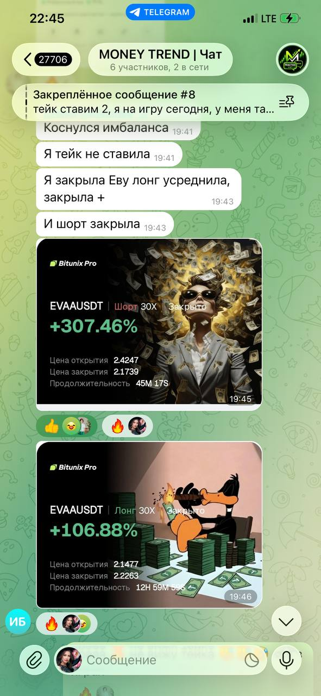
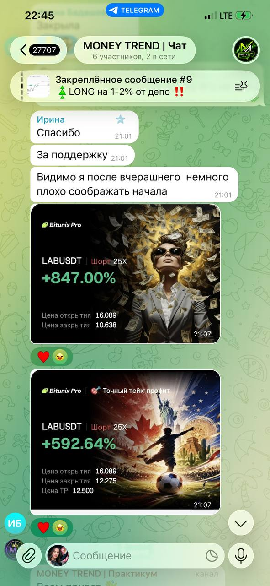
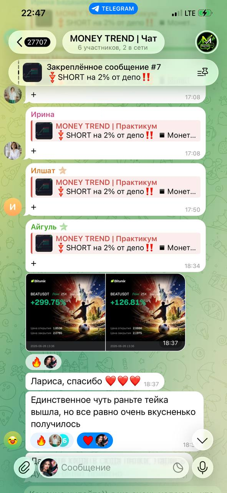
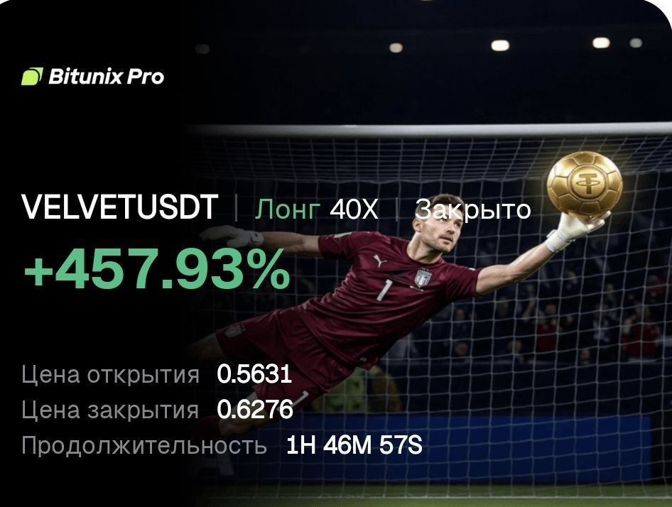
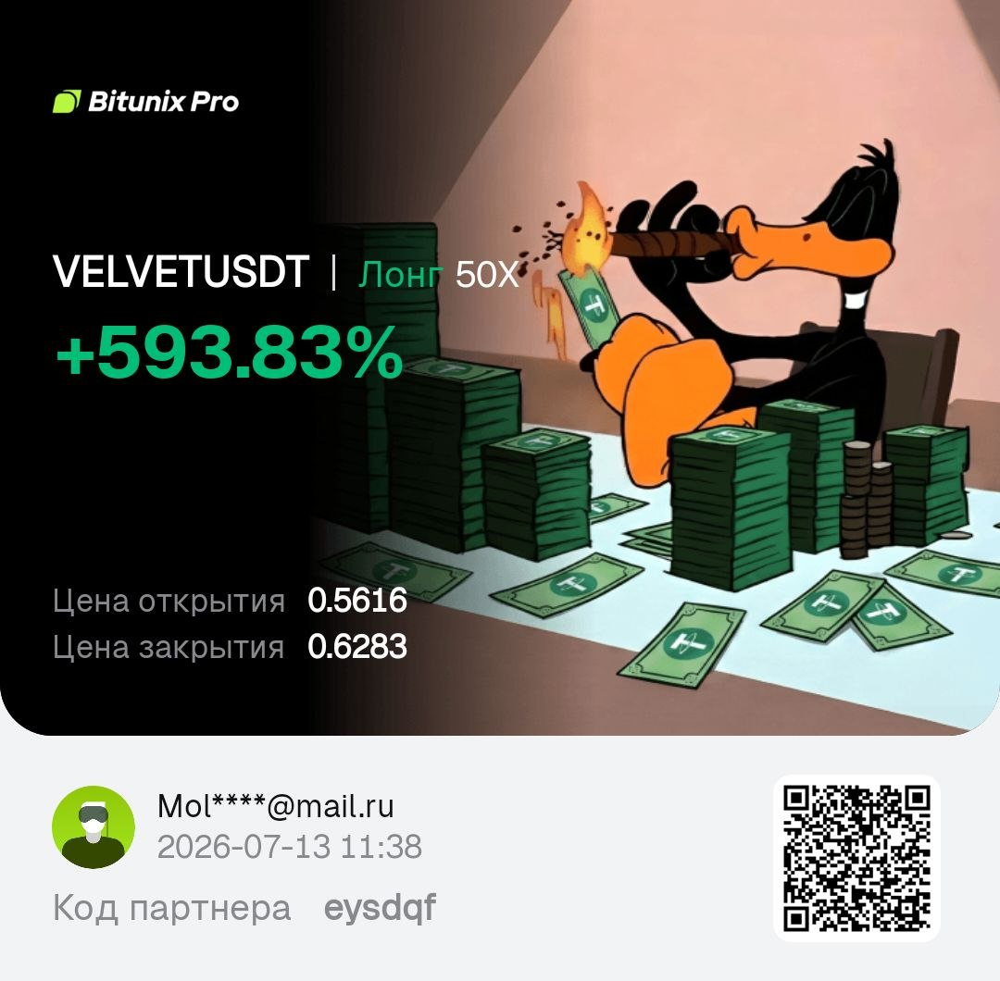
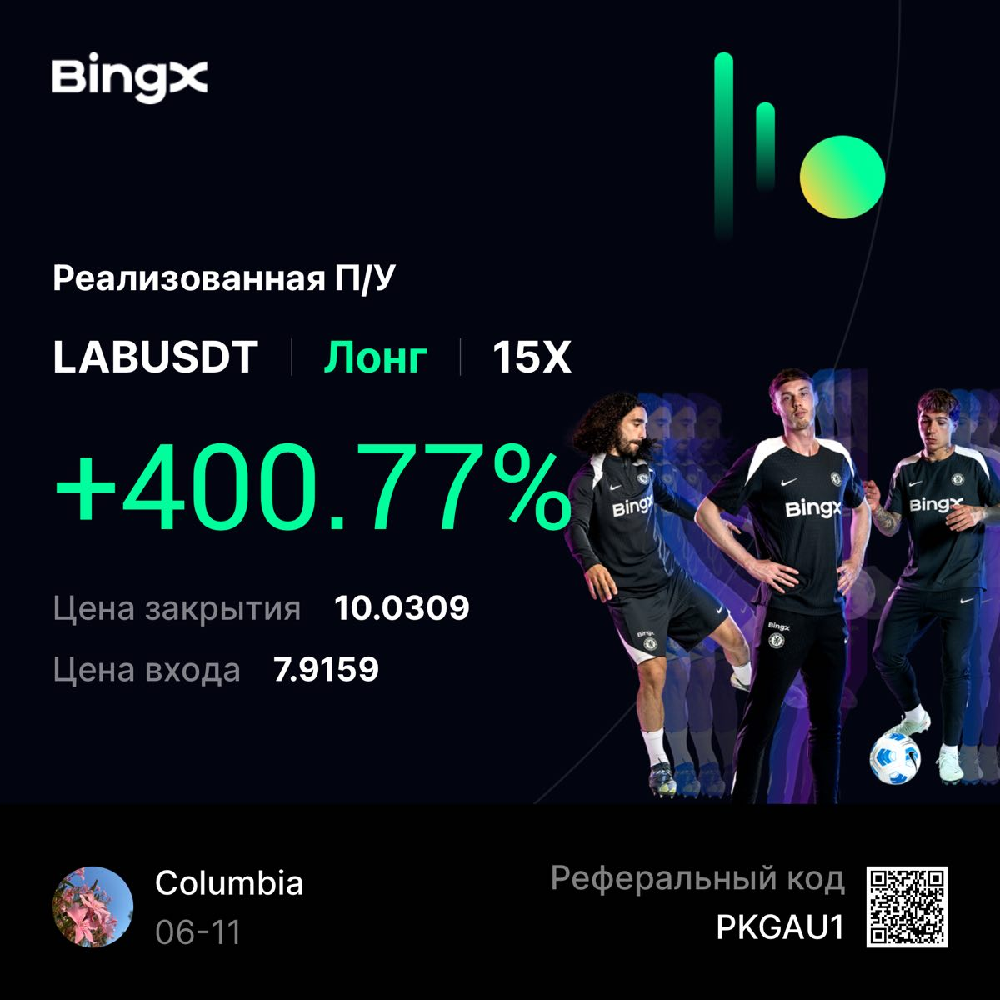

Свобода и независимость
Возможность работать из дома, путешествовать и самостоятельно организовывать свой день, не привязываясь к офису или конкретному городу. Для торговли нужны компьютер, интернет и знания.
MONEY TREND | PRO TRADING
В Академии MONEY TREND вы освоите инструменты технического анализа и основы трейдинга, научитесь применять полученные знания на практике, совершать первые сделки и в дальнейшем самостоятельно торговать на бирже.

02 / ОСНОВАТЕЛЬ АКАДЕМИИ
Меня зовут Лариса Никифорова, я основатель Академии MONEY TREND и практикующий трейдер.
У меня высшее педагогическое образование по специальности «Физика, математика и информатика», более 20 лет опыта в бизнесе, в том числе в сфере финансов, бухгалтерского и управленческого учёта.
Мой путь в трейдинге начался в 2018 году. На протяжении многих лет я собирала знания из разных источников, осваивала технический анализ, волновой анализ, разные методики и применяла полученные знания в собственной торговле на различных инструментах. Позже работала куратором и спикером в онлайн-школе трейдинга, помогая ученикам разбираться в большом объёме новой информации, осваивать технический анализ и применять полученные знания на практике.
Весь накопленный опыт я использую в своей Академии, где для меня важны не только качественные обучающие материалы, но и индивидуальная работа с каждым учеником.
«Я уверена, что трейдингу можно научиться в любом возрасте. Знания, дисциплина, психология, насмотренность и постоянная практика формируют опыт, который помогает трейдеру уверенно принимать решения и достигать поставленных целей».
03 / ПОЧЕМУ ВЫБИРАЮТ ТРЕЙДИНГ
Возможность работать из дома, путешествовать и самостоятельно организовывать свой день, не привязываясь к офису или конкретному городу. Для торговли нужны компьютер, интернет и знания.
В трейдинг можно прийти в любом возрасте. Для этого не обязательно поступать в институт на пять лет. Освоение профессии требует времени, знаний и практики.
Не обязательно сразу оставлять основную работу или бизнес. Трейдинг можно осваивать постепенно, совмещая обучение и практику с привычной деятельностью. По мере накопления опыта и достижения стабильных результатов он может стать вашим основным источником дохода.
В трейдинге нет фиксированного оклада или установленного работодателем потолка дохода. Возможности финансового роста связаны с размером капитала, знаниями, опытом, дисциплиной и грамотным управлением рисками.
За каждым результатом стоят знания, опыт и практика
В Академии MONEY TREND мы не только изучаем технический анализ, но и применяем полученные знания на практике. Здесь вы можете увидеть отзывы моих учеников и результаты нашей торговли.
КОМЬЮНИТИ MONEY TREND
Скриншоты из чата практикума и примеры отдельных сделок. Нажмите на изображение, чтобы посмотреть его целиком.













На скриншотах — результаты отдельных сделок с плечом. Эти проценты не означают доходность всего депозита и не гарантируют будущих результатов.
От интереса к трейдингу — к собственным знаниям и практике
Неважно, начинаете вы с нуля или уже имеете опыт торговли. В Академии MONEY TREND вы можете выбрать программу, которая соответствует вашим целям и задачам.
АВТОРСКИЙ КУРС АКАДЕМИИ MONEY TREND
Одна программа. Три формата обучения.
Полноценное обучение трейдингу с нуля: от знакомства с финансовыми рынками и техническим анализом до разработки собственной торговой стратегии. Выберите формат сопровождения, который подходит именно вам.
Полная программа обучения PRO TRADING
Для тех, кто хочет самостоятельно освоить технический анализ и научиться принимать торговые решения на основе собственной стратегии.
55 000 ₽
За одного ученика
6 недель обучения + 2 недели поддержки
Проверка домашних заданий и обратная связь проходят в Telegram.
Учитесь вместе и поддерживайте друг друга.
Этот формат подойдёт супругам, родственникам или двум близким людям, которые хотят освоить трейдинг вместе.
90 000 ₽
За двоих
Обычная стоимость двух программ — 100 000 ₽
Скидка 10% от обычной стоимости двух программ.
Экономия — 10 000 ₽.
На Zoom-встречах можно разобрать сложные темы, домашние задания, торговые ситуации и ответить на вопросы обоих учеников.
Персональный формат обучения с индивидуальными Zoom-встречами.
Для тех, кому важно не только получить полноценную образовательную программу, но и иметь возможность регулярно разбирать сложные вопросы лично с преподавателем.
100 000 ₽
За одного ученика
6 недель обучения + 2 недели поддержки
Встречи проходят по согласованному расписанию в течение шестинедельной программы.
ДОПОЛНИТЕЛЬНЫЕ ФОРМАТЫ
Нужна помощь с первыми шагами на криптобирже или хотите перейти от знаний к практике? Выберите подходящий формат.
Персональное сопровождение 1:1
Разберёмся с криптобиржей вместе.
Вы хотите начать работать с криптовалютой, но пока не понимаете, как устроена биржа, как купить USDT, настроить фьючерсный терминал и пользоваться торговыми ордерами?
За два часа индивидуальной встречи я помогу разобраться с основными инструментами торговой платформы.
5 000 ₽ / 2 часа
Онлайн, индивидуальная встреча
Бонус: памятка новичка по основным функциям биржи.
Это практическое знакомство с биржей, а не полноценное обучение трейдингу. Регистрация, верификация и другие действия выполняются самим клиентом; успешное завершение проверки личности зависит от биржи.
Записаться на встречуДля тех, кто знает основы теханализа
От знаний технического анализа к практической работе с рынком.
Практикум предназначен для тех, кто уже знаком с основами технического анализа и хочет развивать навыки торговли в сопровождении наставника.
10 000 ₽ / 1 месяц
Онлайн, закрытый Telegram-канал
Практикум не предназначен для абсолютных новичков. Все решения о совершении сделок участники принимают самостоятельно.
Вступить в практикумПОЛЕЗНЫЙ ИНСТРУМЕНТ
Рассчитайте планируемый риск на одну сделку. Укажите размер учебного депозита и выберите процент входа в сделку от депозита — не больше 5%.
Калькулятор показывает сумму входа, а не максимальный убыток. Фактический риск зависит от плеча, стоп-лосса, комиссий и условий сделки.СЛОЖНЫЙ ПРОЦЕНТ / USD
Меняйте сумму, дневной процент и срок. Посмотрите, как меняется результат, если каждый день прибавлять прирост к общей сумме.
100 $ × (1 + 10 / 100)30 = 1 744,94 $
| День | На начало дня | Изменение за день | На конец дня |
|---|
Суммы в таблице округлены до центов. Расчёт использует полную точность.
ЗНАНИЯ И ПРАКТИКА
Ориентироваться в интерфейсе биржи, типах ордеров и торговом терминале.
Понимать движение цены и находить важные уровни на графике.
Использовать индикаторы и инструменты анализа рыночных ситуаций.
Рассчитывать риск, размер позиции и заранее определять условия выхода.
Формулировать правила входа, выхода и оценки торговой ситуации.
Сопоставлять сигналы анализа и следовать своему торговому плану.
Да. PRO TRADING — авторский шестинедельный курс Академии MONEY TREND с изучением основ, технического анализа, риск-менеджмента, психологии и разработкой собственной стратегии. Если вам пока нужна только помощь с платформой, есть отдельная двухчасовая встреча «Криптобиржа с нуля».
Это одна программа с тремя форматами сопровождения. В Стандарте домашние задания проверяются индивидуально, обратная связь проходит в Telegram. В Семейном учатся два человека, предусмотрены 2 совместные Zoom-встречи по 60 минут. VIP — для одного ученика, с 5 обязательными индивидуальными Zoom-встречами по 60 минут по согласованному расписанию в течение курса. Во всех тарифах — 6 недель обучения и 2 недели дополнительной поддержки.
Стоимость тарифа «СЕМЕЙНЫЙ 1+1» — 90 000 ₽ за двух участников. Обычная стоимость — 100 000 ₽. Скидка 10% · Экономия 10 000 ₽. Каждый получает материалы, самостоятельно выполняет задания и получает индивидуальную проверку.
Видеоуроки размещаются в закрытом Telegram-канале. Вы получаете конспекты и дополнительные материалы, выполняете домашние задания с индивидуальной проверкой и получаете обратную связь. Практика на демосчёте проходит после теоретической части. Zoom-встречи предусмотрены в Семейном и VIP в соответствии с выбранным тарифом.
Тем, кто уже знаком с основами технического анализа и хочет развивать практические навыки. Формат — закрытый Telegram-канал на 1 месяц, стоимость — 10 000 ₽. Участники разбирают ситуации, идеи, входы и выходы, риск-менеджмент и дисциплину. Решения о сделках каждый принимает самостоятельно. Для абсолютных новичков подходит курс PRO TRADING.
Это отдельная индивидуальная онлайн-встреча на 2 часа за 5 000 ₽: знакомство с биржей, безопасностью, P2P, терминалом, ордерами и учебной сделкой на демосчёте. Включена памятка новичка. Это практическое знакомство с платформой, а не полный курс трейдинга. Действия в аккаунте выполняете вы; решение о верификации принимает биржа.
Нет. Обучение помогает развивать знания и навыки, но не гарантирует прибыль. Торговля криптовалютой и другими финансовыми инструментами связана с риском потери средств.
Нажмите кнопку в карточке нужного тарифа или дополнительного продукта — откроется ваш черновик сообщения преподавателю в Telegram. Обсудим подходящий формат, ближайший старт, расписание и оплату. Оплата на этом сайте не принимается.
Не уверены, какой формат выбрать?
ВАШ СЛЕДУЮЩИЙ ШАГ
Напишите мне в Telegram «Хочу торговать», и я помогу подобрать программу под ваш уровень подготовки и цели.